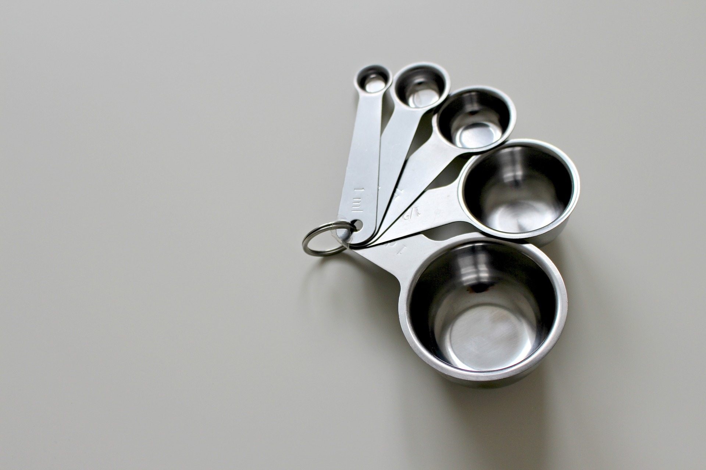
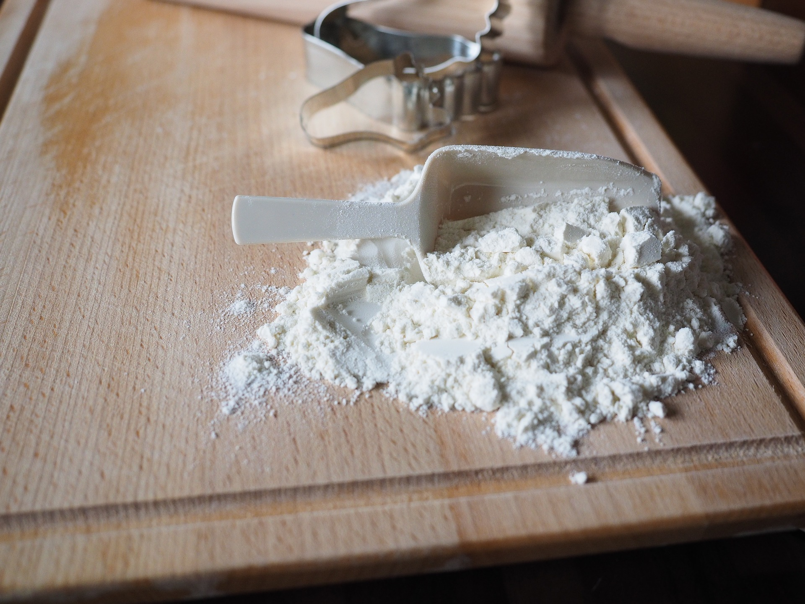
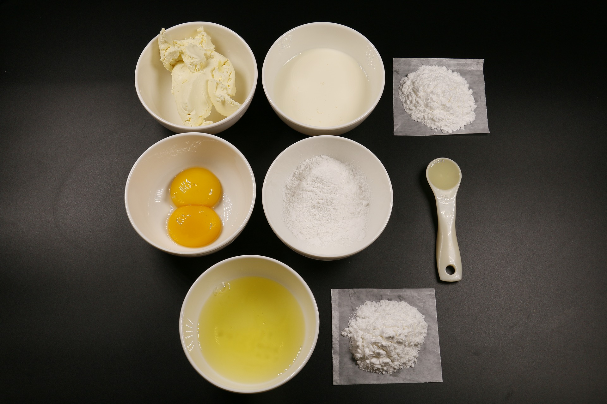

Mittoja ja muunnoksia
Joskus reseptissä mainittuja mittoja täytyy syystä tai toisesta vaihtaa esimerkiksi desilitroista grammoiksi tai toisinpäin. Tässä yleisimmin leivonnassa käytettyjen raaka-aineiden painoja (1 dl)
Jauhot
- vehnäjauho = 65 g
- ruisjauho = 55 g
- maissitärkkelys = 65 g
- perunajauho = 70 g
- kaakaojauhe = 50 g
Sokerit ja siirapit
- hieno sokeri = 95 g
- tomusokeri = 70 g
- fariinisokeri = 70 g
- ruokokidesokeri = 90 g
- tumma siirappi = 150 g
- vaahterasiirappi = 130 g
- tärkkelyssiirappi = 140 g
Mantelit ja pähkinät
- mantelijauhe = 45 g
- mantelilastu = 35 g
- mantelirouhe = 50 g
- kokonaiset mantelit = 65 g
Siemenet ja hiutaleet
- kaurahiutale = 45 g
- iso kaurahiutale = 40 g
- kauralese = 55 g
- ruishiutale = 30 g
- ruislese = 50 g
- pinjansiemen = 35 g
Kananmuna
- suurehko kananmuna = 55 g
- keltuainen = 18 g
- valkuainen = 37 g


